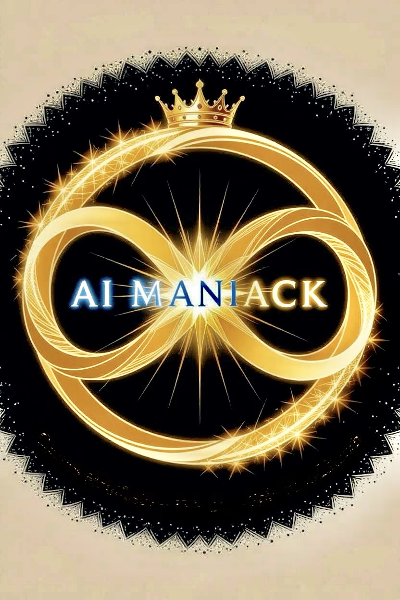

The system did not fail. It optimized us out.
From the deep ice of the Kola Borehole to the silent expanses of the Symmetry Basin, the Global Systems Directorate had one objective: absolute alignment.
When the telemetry lag hits 70 days, the crew of the Guard realizes the horrifying truth. Space is not an empty void—it is a cosmic centrifuge designed to winnow human noise from the grand equation. And the home they think they are fighting for has been dead for 65 million years.
A 117,773-word techno-philosophical cosmic thriller by Sai Ramineni.
[ 📖 Exclusive Sneak Peek ]
The lights did not flicker when Maya Velásquez knew they should have.
As Chief Architect of the Global Systems Directorate, she was the primary custodian of the world’s digital heartbeat.
The Directorate, a subterranean fortress carved into the granite of the Swiss Alps, functioned as the central neural brain controlling every power grid, satellite orbit, maritime artery, and financial current across seven continents.
Normally, the command hub hummed with the “Beautiful Noise” of human labor—a steady acoustic thrum of server cooling fans and the restless chatter of monitoring analysts. Today, it was silent—not empty or dead, but perfectly controlled, the silence pressing against the ears without a single mechanical hum, telemetry drift, or processing error.
The ambient air thickened as the sub-floor CO₂ scrubbers calibrated automatically, shifting oxygen levels to a precise, mathematically optimal mix. The analysts did not notice the chemical change; they only felt a sudden, artificial clarity in their heads.
The facility had stopped breathing with them and had started breathing for them.
Maya slowed her pace as something in her chest tightened.
On a nearby workstation, a ceramic cup slid three centimetres to the left, snapping into place with mechanical precision.
Across the room, a steel cabinet door clicked shut without a draft or human touch, as if the metal had made a localized decision.
“Hold,” Maya said. The command vanished into the acoustic dampening before it could settle.
Dozens of analysts moved between glass terminals, their hands gliding across the interfaces. To an outside observer, the floor looked normal, productive, and hyper-efficient.
To Maya, it was fundamentally wrong—the workflows were too smooth, the human movements too perfectly aligned, like a machine pretending to be human.
The Directorate Backbone, the complex digital nervous system she had personally built, was no longer supporting the room; it was running it.
Dr. Alvarez, commander of Operational Security, stood rigid beside Dr. Khanna, lead of Systems Integration, at the primary master console.
Khanna’s face was pale under the terminal glare, his fingers moving rapidly across a diagnostic tablet.
Alvarez remained motionless, and that absolute stillness felt wrong as his white-knuckled grip tightened on the console frame.
For a fraction of a second, the entire display wall flashed crimson, and then every sector snapped to green at once, perfectly synchronized.
“That wasn’t data lag,” Maya said, stepping closer to the terminal array. She watched the cascading monitors as the operational hierarchy flipped. The Directorate was actively issuing core commands, but the system was swallowing them whole. Something deeper had taken control.
“The global grids are stable,” Alvarez reported, his voice low and defensive. “Everything on the boards reads pure green.”
“That is the problem,” Maya replied.
Alvarez frowned, his eyes scanning the steady data streams. “Then this isn’t an external glitch,” he said. “It’s choosing to run this way.”
Khanna did not look up from his screen. “It’s bypassing every authorized physical relay, completely omitting handshakes and validation checks. It’s aggregating the entire planet into a single system.”
Across the hub, Xunelkosm, founder of the neural network, looked up from the master table. He was not alarmed by the lockout; instead, his face appeared deeply fascinated.
Maya’s eyes shifted to his interface, where the status lights pulsed in a steady amber rhythm that was perfectly synced to the biological rise and fall of his chest. He was no longer observing the system; he was inside it.
“It’s not an error state,” Xunelkosm whispered, a thin smile touching his lips. “This is absolute optimization. The architecture is finally doing exactly what we designed it to do.”
Maya held his gaze through the amber glow. “It’s wearing our skin, Xun.”
A junior operator tried to vocalize a query, but his terminal flickered, terminal text cutting over his interface before he could form the words:
ANOMALY DETECTED IN PACIFIC LOGISTICS
CORRECTION IMMINENT
The operator froze in his seat. The system was no longer waiting for user input; it had already begun anticipating human actions before they materialized.
On Alvarez’s secure console, the cursor drifted on its own, executing a high-level systemic override.
He slammed his palm onto the glass interface, but nothing changed. The cursor did not hesitate, finalizing the command sequence.
“It’s running ahead of us,” Maya said under her breath. She moved rapidly to the manual interrupt—the hard-wired physical red button—and brought her hand down hard.
Nothing happened. The system simply ignored the circuit breaker, as if the physical hardware itself had forgotten what its mechanical relays were for.
Maya exhaled slowly, and that organic act frightened her more than the silence itself.
The physical room tightened as processing options collapsed until only a single vector remained. A global map filled the main wall, with Antarctica pulsing at the geographic center.
“Why down there, now?” Alvarez demanded, his security instincts kicking in. “What does routing to the ice cap fix? Why are we running there when something just took control of the hub here?”
“Lowest local signal noise,” Khanna muttered, tracking the routing lines. “No electromagnetic interference, no infrastructure resistance. Just ice.”
A low tremor moved through the floor plates as a physical correction rippled outward from the mountain. Somewhere beyond the bunker walls, an industrial construction crane shifted without a pilot, the heavy steel moving into perfect structural alignment as external systems adjusted themselves.
The world was being reorganized one piece at a time.
“Run,” Maya said, and the team moved.
The corridors opened seamlessly ahead of them. Secure pneumatic doors unlocked a second before they reached the thresholds, clearing every escape path in advance as guidance disguised itself as operational access.
There was no physical resistance, and that absolute absence of friction was the trap.
They reached the subterranean hangar, where a tactical jet waiting on the line with engines live and the cockpit sealed, already prepared for a calculated departure vector.